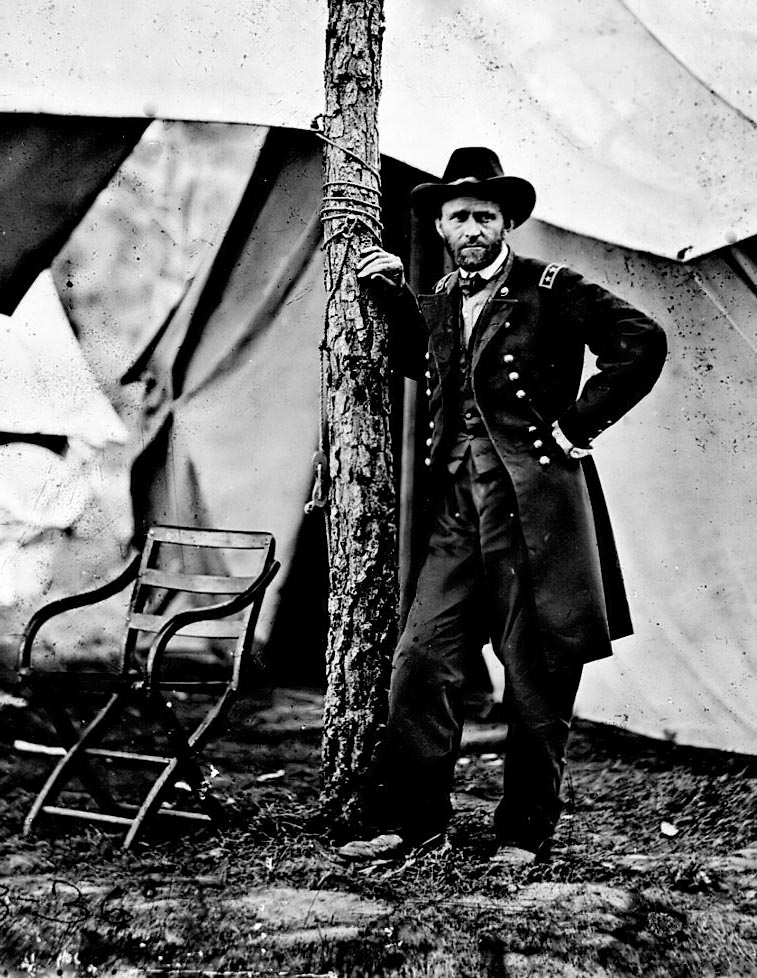
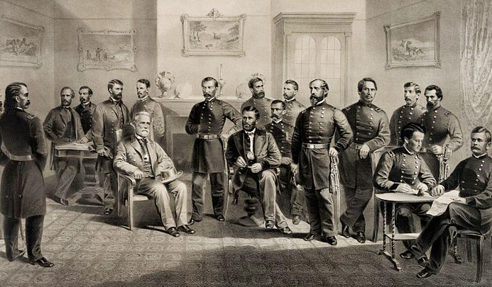

|
Appomattox Courthouse was the site of the historic surrender
of Confederate forces to Lieutenant General Ulysses Grant on
April 9, 1865. A note from General Grant sums up the
feeling of the moment. It was addressed to "General R. E.
Lee, Commanding General of the Confederate States of
America" and was dated April 7, 1865. "Dear General," wrote
Grant, "The result of the last week must convince you of the
hopelessness of further resistance on the part of the Army
of Northern Va. in this struggle. I feel that it is so and
regard it as my duty to shift from myself, the
responsibility of any further effusion of blood, by asking
of you the surrender of that portion of the C.S. Army known
as the Army of Northern Va."
Grant's words show that the story of the Appomattox
campaign of March 25-April 9, 1865, was a grim one for the
Confederates. The Battle of Five Forks on April 1, 1865,
destroyed the last supply line for the Army of Northern
Virginia. Lee's subsequent evacuation from Richmond and
|

Ulysses S. Grant, shortly before
the surrender took place.
|
Petersburg left his fast dwindling army hungry and weak. His
goal was to escape somehow the clutches of the Federals by
going southwest to meet up with General Joseph Johnston's
force in North Carolina. There, the combined Confederate
armies could take on federal forces at a spot of their own
choosing.
Grant's cavalry and infantry moved quickly to cut off all
escape routes. The Confederates were dealt a heavy blow
when on April 6th, when 80,000 Union troops chased after
35,000 of Lee's men and stopped them from turning south at
Sayler's Creek, near Farmville, where Union forces had
captured 7,000 Southern soldiers. The next day, Grant's note
went out to Lee asking him to surrender. Lee refused. Worse
was yet to come for the Confederates. On April 8th, General
Philip Sheridan's cavalry troops captured two trainloads of
rations meant for Lee's starving troops.
April 9th was Palm Sunday and early morning found Lee and
the remnants of his army in desperate flight across the
Appomattox River headed for the safe harbor of Lynchburg,
Virginia. A quick look at the massed Federal army blocking
the way revealed the hopelessness of the Confederate
position. Lee said: "There is nothing left for me to do but
to go and see General Grant, and I would rather die a
thousand deaths." Grant was nursing a migraine when Lee's
request for an immediate interview to discuss terms of
surrender was delivered. Grant wrote later: "I was still
suffering with the sick headache; but the instant I saw the
contents of the note I was cured." It was agreed that the
two generals would meet in Appomattox Courthouse, a small
community deep in the countryside of Virginia, about 20
miles southeast of Lynchburg.
A little after 1:30 p.m., Grant and his staff rode into
the village and stopped their horses at the 2-story brick
farmhouse of Wilmer McLean. In the parlor of McLean's
residence sat Robert E. Lee and a lone aide, waiting for
them. General Lee was dressed in his best uniform, with a
beautiful sword by his side, looking every inch the southern
gentleman he was. The commanding general of Northern armies
was much less formal. His dress uniform not available, Grant
was in his preferred casual field uniform complete with mud
splatters from his journey. The two men exchanged some
pleasantries. Grant observed his counterpart's emotionless
face closely during the conversation, and remarked, "What
General Lee's feelings were I do not know. As he was a man
of much dignity with an impassible face it was impossible to
say whether he felt inwardly glad that the end had finally
come..."
Ely S. Parker, Grant's military secretary brought over a
table for him to begin writing out the terms of surrender.
"I only knew what was in my mind," reflected Grant.
Characteristically direct and simple, Grant's terms were
also magnanimous, and reflected his and President Lincoln's
great desire that the beaten Confederates neither be
humiliated nor punished. Total defeat was enough. The Rebels
|

An 1867 engraving of the surrender.
|
were to "lay down arms," return home as paroled prisoners,
and promise to obey the laws of the United States. Grant
would not require Lee to hand over his sword, and Southern
officers would be able to keep their side arms. Both
officers and enlisted men could bring their horses and mules
back with them. "This will have the best possible effect
upon the men," Lee said. "It will be very gratifying, and
will do much toward conciliating our people." Copies of the
surrender were then made, and Lee wrote out a letter
accepting the terms. Lee's request for rations for his men
was approved, and at 4:00 pm, the two men shook hands. Lee
then mounted his horse, Traveller, and slowly moved down the
road to the Confederate camp.
News of the surrender spread quickly through the Union
camps and soon thousands of soldiers were cheering and
throwing their hats into the air. A 100 gun-salute was begun
but Grant immediately stopped it saying, "The war is over.
The Rebels are our countrymen again." Perhaps the most
common emotion for the weary soldiers of both sides was a
great relief that the war, and the killing, was finally
over. The great problems of reconstructing the Union and
easing the bitterness between North and South lay ahead.
Shortly after Lee's departure, Grant telegraphed Edwin
Stanton, the Secretary of War: "General Lee surrendered the
Army of Northern Virginia this afternoon on terms proposed
by myself." Washington, D.C. went wild with happiness. Back
at Appomattox, on April 12th, the formal ceremony of the
laying-down-of arms occurred in an atmosphere of respectful
conciliation. Although several more Confederate armies would
surrender in the months to come, the meeting between Grant
and Lee at Appomattox Courthouse is considered the end of
the American Civil War.
Source: Joan Waugh, ed., Facts on File Encyclopedia of American
History: Civil War and Reconstruction, 1856 to 1869 (New York: Facts on
File, 2003), 13-15.
|